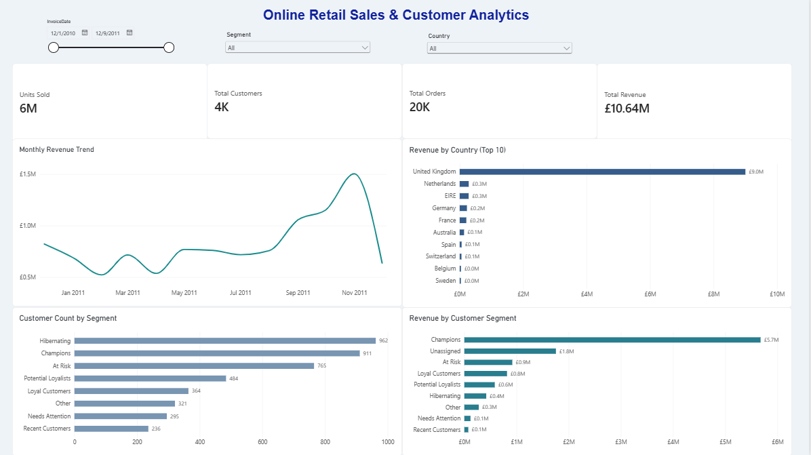

Power BI Dashboard — Online Retail Sales & Customer Analytics
Project Overview
This project includes an interactive Power BI dashboard designed to analyze online retail sales performance, revenue trends, country-level performance, and customer segments.
The dashboard transforms transaction-level sales data and RFM-based customer segmentation into actionable business insights through interactive visualizations and key performance indicators (KPIs).
Dashboard Preview

Business Objectives
- Monitor overall retail sales and revenue performance.
- Analyze monthly revenue trends and identify peak sales periods.
- Identify the top revenue-generating countries.
- Compare customer counts across RFM segments.
- Evaluate revenue contribution by customer segment.
- Explore business performance using interactive filters.
Key Performance Indicators
The dashboard displays four headline KPIs:
| KPI | Overall Value |
|---|---|
| Units Sold | Approximately 6M |
| Total Customers | Approximately 4K |
| Total Orders | Approximately 20K |
| Total Revenue | £10.64M |
These figures reflect the overall values displayed in the current dashboard and may change when filters are applied.
Dashboard Visualizations
1. Monthly Revenue Trend
A line chart showing monthly revenue over time, helping identify fluctuations, growth patterns, and seasonal sales peaks.
2. Revenue by Country (Top 10)
A horizontal bar chart ranking countries by revenue. The United Kingdom is the leading market, contributing approximately £9.0M in the current dashboard.
3. Customer Count by Segment
A comparison of customer counts across RFM-based segments. Hibernating has the highest displayed customer count, at 962, followed by Champions at 911.
4. Revenue by Customer Segment
A comparison of revenue contribution across customer segments. Champions is the leading segment, contributing approximately £5.7M in the current dashboard.
The dashboard also includes an Unassigned category for revenue that does not have a matching customer segment. This category should be investigated before drawing conclusions about customer-level performance.
Interactive Features
Users can explore the report using three filters:
- InvoiceDate: Select a date range to analyze sales over a specific period.
- Country: Focus on an individual market.
- Segment: Examine a particular customer group.
The KPI cards and relevant visualizations respond to the selected filters, enabling interactive business analysis.
Tools and Technologies
- Microsoft Power BI Desktop: Dashboard design and data visualization.
- Power Query: Data preparation and transformation.
- DAX: Measures and calculated columns.
- RFM Analysis: Customer segmentation based on Recency, Frequency, and Monetary value.
- Git and GitHub: Version control and project documentation.
Data Model
The Power BI model includes the following tables:
sales_clean— Transaction-level sales records.customer_rfm— Customer-level RFM metrics and segment assignments.rfm_segment_summary— Aggregated customer segment information.
The model combines sales performance with customer segmentation to support market-level and customer-level analysis.
Key Findings
Based on the current dashboard:
- The United Kingdom is the strongest revenue-generating country.
- Champions contributes the highest revenue among the displayed customer segments.
- Hibernating has the largest displayed customer count.
- Monthly revenue reaches its highest displayed point in November 2011.
- Unassigned revenue highlights an area for further data-quality investigation.
These findings describe the current report and should be interpreted alongside the selected filters and data preparation rules.
Repository Structure
ecommerce-sales-analysis/
├── data/
├── notebooks/
├── reports/
│ └── Online_Retail_Dashboard.pbix
├── visuals/
│ └── dashboard-preview.png
├── README.md
└── .gitignoreHow to Run the Dashboard
- Download
reports/Online_Retail_Dashboard.pbixfrom this repository. - Open the file using Microsoft Power BI Desktop.
- Use the Country, Segment, and InvoiceDate filters to explore the data.
- Compare the KPI cards and visualizations to investigate sales performance and customer behavior.
Future Improvements
- Investigate and validate the Unassigned customer segment.
- Further validate relationships between the sales and customer tables.
- Add product-level sales and revenue analysis.
- Expand customer retention and purchasing behavior analysis.
- Improve the documentation of data preparation and DAX calculations.